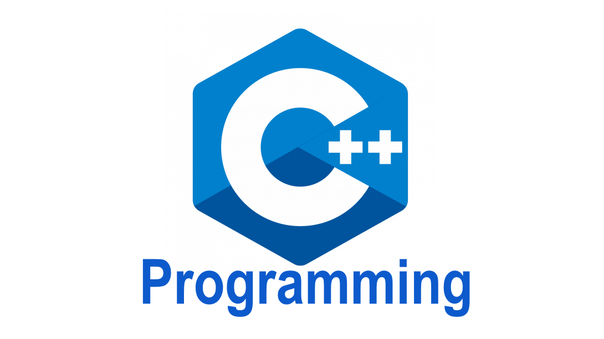

C++
Язык программирования С++ представляет высокоуровневый компилируемый язык программирования общего назначения со статической типизацией, который подходит для создания самых различных приложений. На сегодняшний день С++ является одним из самых популярных и распространенных языков.
С++ является мощным языком, унаследовав от Си богатые возможности по работе с памятью. Поэтому нередко С++ находит свое применение в системном программировании, в частности, при создании операционных систем, драйверов, различных утилит, антивирусов и т.д. К слову сказать, ОС Windows большей частью написана на С++. Но только системным программированием применение данного языка не ограничивается. С++ можно использовать в программах любого уровня, где важны скорость работы и производительность. Нередко он применяется для создания графических приложений, различных прикладных программ. Также особенно часто его используют для создания игр с богатой насыщенной визуализацией. Кроме того, в последнее время набирает ход мобильное направление, где С++ тоже нашел свое применение. И даже в веб-разработке также можно использовать С++ для создания веб-приложений или каких-то вспомогательных сервисов, которые обслуживают веб-приложения. Так же на C++ написано и пишется множество библиотек для машинного обучения и искусственного интеллекта. В общем С++ - язык широкого пользования, на котором можно создавать практически любые виды программ.
С++ является компилируемым языком, а это значит, что компилятор транслирует исходный код на С++ в исполняемый файл, который содержит набор машинных инструкций. Но разные платформы имеют свои особенности, поэтому скомпилированные программы нельзя просто перенести с одной платформы на другую и там уже запустить. Однако на уровне исходного кода программы на С++ по большей степени обладают переносимостью, если не используются какие-то специфичные для текущей ос функции. А наличие компиляторов, библиотек и инструментов разработки почти под все распространенные платформы позволяет компилировать один и тот же исходный код на С++ в приложения под эти платформы.
В отличие от Си язык C++ позволяет писать приложения в объектно-ориентированном стиле, представляя программу как совокупность взаимодействующих между собой классов и объектов. Что упрощает создание крупных приложений.
Так как на счет приступить к изучению этого языка?